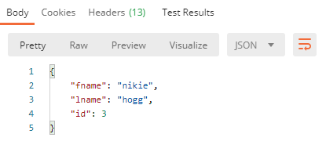

JSON-Server setup and basics 04th Jan 2021
In this blog we will learn about JSON Server,it's setup and how to use it.
What is JSON server
It is a JavaScript JSON-Server library, which can be used to create fake REST API. JSON Server is a great way to set up a full fake REST API for front-end development.The best part about the library is that it can be setup quickly and one can start using it in almost no time. You can use some of the real API’s data if it already exists or create a mock data based on the API Schema in db.json file
Why do we need to fake API's?
For any software to be successful and delivered on time, all teams(eg front end devs,backend devs,testers,UX etc) needs to work together and when possible parallely. During software development phase, front end developers are given a requirement for the things they need to work upon. For eg, they need to develop a new screen.The dynamic data which needs to be shown on the screen has to come from somewhere (may be from a DB,or 3rd party application,or any other data source in that matter). The point is front end needs to talk to the backend and get the data. Most of the modern web application expose REST API for the front end to consume. Now,when the new requirement comes in, front end developers can't wait for the API to be 100% ready before they can start developing the screen. Just imagine the time wasted.Also, even if the API is 100% ready, there are other reasons to use a FAKE API. eg What if the API is slow, or if API is a paid service and you will incur costs when you hit the API multiple times during development ,or api is rate-limited,or you are behind a firewall and can't make outbound calls. There may be other reasons as well. So having FAKE API's expedites the process of front end development. And once API is 100% ready and front end dev is actually done, you can replace the fake api call with the original API call before deploying it for testing phase
I am also attaching my video tutorial on the same
JSON Server Installation steps
-
Node
Link to download
To check if node is installed succesfully, or if node already
exists, run npm-v and node -v on your command
prompt
-
JSON Server installation
npm install -g json-server OR sudo npm install -g json-server If you are on ubuntu.
BTW, if you are wondering what -g is doing in above command, it simply means that you are installing the package globally.-g directive tells npm to install the package in the global shared node_modules folder (usually where you have node).
Benefits of doing it are simple- No need to install it for every app or script that starts in a new directory
- .js scripts can run from anywhere without needing a node_modules folder in the same directory.It also means you need less storage space
- You will access it from command line as well
Creating FAKE API using JSON Server
- Create a folder where you want your api to be created (Basically where) db.json will be created. I created a folder JSONServerDemo in my C:\
-
Run json-server --watch db.json. If there is no db.json
already(like in this case), it creates one with default api's.
It is db.json file which actually acts as the REST endpoint with
data
If you look at above image, we get a message which says db.json doesn't exist and one will be created .You can also see that the server started on port 3000 and is already serving 3 endpoints i.e posts,comments and profile. Below is the snapshot of db.json.I created another end point named employees just to show how we can use db.json file{ "posts": [ { "id": 1, "title": "json-server", "author": "typicode" } ], "comments": [ { "id": 1, "body": "some comment", "postId": 1 } ], "profile": { "name": "typicode" }, "employees": [ { "id": 1, "fname": "manju", "lname": "s" }, { "id": 2, "fname": "albert", "lname": "dawson" }, { "id": 3, "fname": "nikie", "lname": "finch" } ] }
Test out the API's-GET,POST,PUT,DELETE
Use any REST API client like Postman to test out the
API's. I will use the employees end point and will show you
GET,POST,PUT and DELETE.The concept remains the same for other
endpoints/API's as well
I have shared all the requests for GET,POST,PUT and DELETE on
my github repository. You can download it here
Git hub link to JSONServerDemo
You can download and import
"JsonServerSampleAPIsDemo.postman_collection.json" into
your Postman client so that you can simply start using it and
will save you some typing. I have a separate blog to show how
to use POSTMAN show how to import/export collections and how
to use workspaces,swap between workspaces etc.All of this is
beyond the scope of the current article
GET
GET Get all Employees.Currently we have 3 employees
POST-Create new record/employee
Let's create a new employee.We will just post with body fname and lname. id is generated automatically. There are 3 images below.
-
First one,shows what fields to select when pasting body into
JSON. (select raw, ad select type as JSON)

-
Second one,shows how to set header(select
content-type as application/json)

-
Third one,actually shows you the response i.e actually after
you send the request to the API.)
If you again run a GET of all employees you will see 4 records
PUT-Update an existing record/employee
Let's update an existing employee.To update, it's important to pass the value of id in the url. id is the value of the record we want to update.
-
First one,shows what fields to select when pasting body into
JSON. (select raw, ad select type as JSON). It
also shows id which is
value of 3 in this case being passed in the URL
- Second one,shows how to set header(select content-type as application/json)
-
Third one,actually shows you the response i.e actually after
you send the request to the API.)

If you again run a GET you will see the record with id of 3 has been updated to the new value you sent above
DELETE-Remove an existing record/employee
You can delete a record by simply passing the value of id in the URL and doing a DELETE as shown in image below
If you again run a GET you will see the record with id of 4 has been deleted
If you donot want to use id but any other customid eg employeeid
If you notice below, we donot use an id but an employeeid in our db.json. If you start json server normally lole we did above, we will get an error.problem is json-server use id as a primary key when you searching
{
"employees": [
{
"employeeid": 1,
"fname": "manju",
"lname": "s"
},
{
"employeeid": 2,
"fname": "albert",
"lname": "dawson"
},
{
"employeeid": 3,
"fname": "nikie",
"lname": "finch"
}
]
}
Fix for above issue
json-server db.json --id 'employeeid'all should start working as normal again.Also point to remember is that A J SON data needs a property named "id" to store the data we send.(If already some data is stored manually in the DB) If the DB is empty when we send our first request, it will assign a parameter "id" automatically(and give it some random value) in addition to the provided data (if we don't mention an "id" parameter explicitly) and for every further request.
And that's it. Hope you undertood what is JSON Server,it setup and the use. If you want to learn how to customize JSON server to your needs look at my blog customizejsonserver.Email me at "thizismanju@gmail.com" incase you have queries. Alternatively, you can fill the "CONTACT" form or drop a comment below